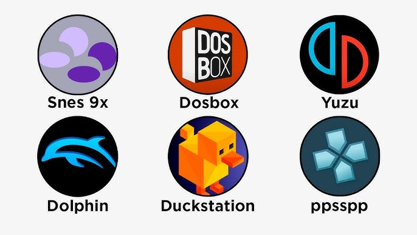
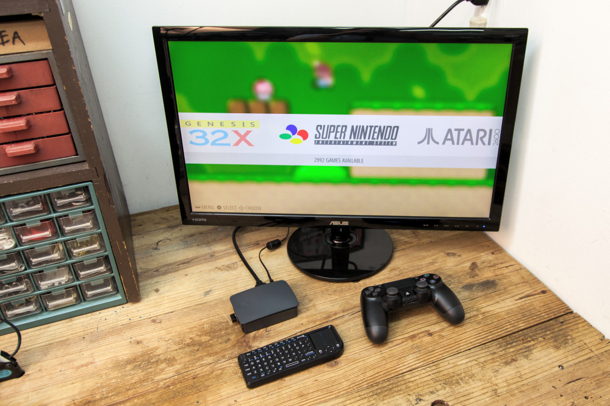

El lanzamiento mas esperado de 2026
 Hay algo en los emuladores que no se puede describir fácil, pero se siente. No es solo “jugar juegos viejos”, es volver a una época donde todo era más simple. Cuando éramos chicos no importaba la calidad gráfica, ni cuántos FPS corría, ni si el online funcionaba bien. Lo único que importaba era sentarse, agarrar el control y perderse en un mundo nuevo. Jugar en emuladores es exactamente eso: recuperar esa sensación.
Ya sea en la compu, en un emulador para el celu o en una consola piratita heredada, volver a abrir juegos como Super Mario World, Pokémon Esmeralda, GTA San Andreas o Metal Slug es como viajar en el tiempo. La música, los sonidos, las animaciones simples… todo tiene ese toque que hoy casi no se encuentra. Los juegos modernos son increíbles, sí, pero también están llenos de cinemáticas largas, tutoriales eternos, pases de batalla y mil cosas para pensar antes de empezar. Los juegos retro, en cambio, te dejan jugar. Entras y listo. Nada más.
 Además, algo que tiene la emulación es el valor personal. Cada uno tiene “ese juego” que jugó cuando era chico y que quedó grabado para siempre. Capaz lo jugaste en un ciber, en la Play 2 de tu primo, en la Game Boy trucha de la feria o incluso en la compu del colegio. Y ahora lo podés volver a jugar sin importar si la consola se rompió, si ya no existe o si nunca la tuviste. Eso es lo más lindo: la emulación le da una segunda vida a juegos que no merecen ser olvidados.
Y sí, está la parte técnica, los juegos que se ven mejor con filtros, texturas HD, traducciones fan, mods, partidas guardadas infinitas… pero lo importante no es eso. La emulación no es para “mejorar” el juego, es para revivir lo que sentías cuando lo jugaste por primera vez. Es nostalgia pura, pero de la buena. De la que te saca una sonrisa.
 Jugar con emuladores es volver a cuando la única preocupación era pasar el nivel, derrotar al jefe final o encontrar ese truco que todos comentaban en el recreo. Es recuperar un pedacito de infancia. Y eso vale más que cualquier remaster en 4K.
Jugar con emuladores es volver a cuando la única preocupación era pasar el nivel, derrotar al jefe final o encontrar ese truco que todos comentaban en el recreo. Es recuperar un pedacito de infancia. Y eso vale más que cualquier remaster en 4K.